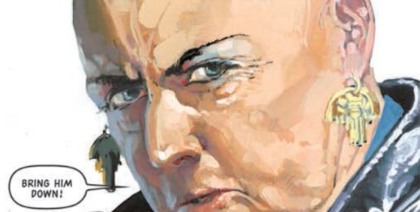

Judge Jura Edgar was head of PSU (the Public Surveillance Unit of the Justice Department), but had a habit of holding onto incriminating information in order to wield power over other Judges.
Art by John Burns
| Story Title | Parts | Pages | w indicates a wraparound coverCovers | Year(s) | Issues | Writer | Artist | Colourist | Letterer |
|---|---|---|---|---|---|---|---|---|---|
From Judge DreddThe Cal Files | 5 | 30 | 959: Dougie Braithwaite 963: Dougie Braithwaite 2 | 1995 | 959-963 | John Wagner | John Burns | <-- | Tom Frame |
From Judge DreddSleaze | 1 | 17 | Jason Brashill 1 | 1998 | M3.40 | John Wagner | John Burns | <-- | Tom Frame |
From Judge DreddThe Scorpion Dance | 8 | 48 | 1125: Simon Davis 1129: Jason Brashill 2 | 1998-1999 | 1125-1132 | John Wagner | John Burns | <-- | Tom Frame |
From Judge Dredd Doomsday arc: prog/meg crossover.Doomsday | 4 | 60 | M3.56: Duncan Fegredo M3.57: Kevin Walker M3.59: Greg Staples 3 | 1999 | M3.56-M3.59 | John Wagner | Colin Wilson: 1‑2 Mike Collins: 3‑4 various | Janet Gale: 1‑2 Alan Craddock: 3‑4 various | Tom Frame |
From Judge Dredd Doomsday arc: prog/meg crossover.Endgame | 5 | 30 | 1160: Greg Staples 1162: Dylan Teague 2 | 1999 | 1160-1164 | John Wagner | Charlie Adlard | Chris Blythe | Tom Frame |
From Judge DreddThe Cal Legacy | 2 | 12 | 1179: Cliff Robinson & Chris Blythe 1 | 2000 | 1178-1179 | John Wagner | Colin Wilson | Janet Gale | Tom Frame |
From Judge DreddOn the Chief Judge's Service | 4 | 24 | 1264: Adrian Salmon & Chris Blythe 1 | 2001 | 1263-1266 | John Wagner | Colin MacNeil | <-- | Tom Frame |
From Judge DreddRevenge of the Chief Judge's Man | 8 | 49 | 1345: Cliff Robinson & Chris Blythe 1348: Dylan Teague & Chris Blythe 2 | 2003 | 1342-1349 | John Wagner | John Burns | <-- | Tom Frame |
From Judge DreddThe Edgar Case | 7 | 42 | 1593: Carl Critchlow 1 | 2008 | 1589-1595 | John Wagner | Patrick Goddard (P) Lee Townsend (I)various | Chris Blythe | Annie Parkhouse |
| year | episodes | pages |
| 1991 | 0 | 0 |
| 1992 | 0 | 0 |
| 1993 | 0 | 0 |
| 1994 | 0 | 0 |
| 1995 | 5 | 30 |
| 1996 | 0 | 0 |
| 1997 | 0 | 0 |
| 1998 | 2 | 23 |
| 1999 | 16 | 132 |
| 2000 | 2 | 12 |
| 2001 | 4 | 24 |
| 2002 | 0 | 0 |
| 2003 | 8 | 49 |
| 2004 | 0 | 0 |
| 2005 | 0 | 0 |
| 2006 | 0 | 0 |
| 2007 | 0 | 0 |
| 2008 | 7 | 42 |
| 2009 | 0 | 0 |
| 2010 | 0 | 0 |
| 2011 | 0 | 0 |
| 2012 | 0 | 0 |